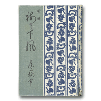

音羽屋をより深く知るための本
音羽屋をより深く知るための本 > 『梅の下風』
六代目尾上梅幸『梅の下風』
（法木書店 1934年）数ある芸談のなかでも名著とされる一冊
この六代目尾上梅幸による芸談は、数々の芸談の中でも名著とされる一冊です。女方の芸談としては、他に五代目中村歌右衛門の『魁玉夜話 歌舞伎の型』（文谷書房 昭和25年）が有名ですが、この『梅の下風』と『魁玉夜話』は、同時代を生きた二人の女方による大きな遺産となっています。
『梅の下風』は、雑誌『演芸画報』に連載された記事がもとになっています。昭和5年（1930）に一冊にまとまり刊行、当初から聞き手であった井口政治が増補し、上演年表と略伝記が付されたものが『新修梅の下風』として昭和9年（1934）に上梓されました。さらに、昭和33年（1958）に演劇出版社から『六世尾上梅幸芸談集・梅の下風』として出版されています。
本書では、父五代目菊五郎のこと、若くして世を去った息子たちのこと、劇界の様々な習俗のこと、役を演じるうえでの決まりごと、舞台や楽屋でのエピソードなどが、簡潔に淡々と語られていきます。劇界の習俗や役の心構えなどを語るときの博識ぶりには驚かされますが、それでいて決して押しつけがましくないところが、いかにも六世梅幸の人柄を表しています。
たくさんの芸談の中でとりわけ興味深いのは、手拭いの使い方、手や指の使い方、煙管の持ち方など、いわゆる口伝の類いです。手拭いについては、いがみの権太、辰五郎女房お仲、弁天小僧、十六夜など種々の役について、その使い方を示しています。図示もされており、指の使い方に関しても、女方でも演じる役の年齢によって使い方が違のだとよくわかります。狐や猫、鬼や蜘蛛を演じるときの手の形についての解説も詳しく書き残しています。。
心構えや約束事以外にも、役をめぐる古いエピソードも読み応えがあります。例えば小道具の蔦さんが体験したの幽霊の話、この話を聞きつけた三代目菊五郎は、『東海道四谷怪談』に登場する小仏小平の衣裳を工夫したといいます。また、『四谷怪談』「庵室の場」、お岩が引笑いをするくだりが有名ですが、その手本としたのは、三代目が巡業に出た先で夜道に迷い、あばら屋の柱に括りつけられたざんばら髪の若い女だったのです。江戸の劇場や巡業の雰囲気が感じられ、すこぶる面白く読むことができます。
Copyright © Otowaya All Rights Reserved.